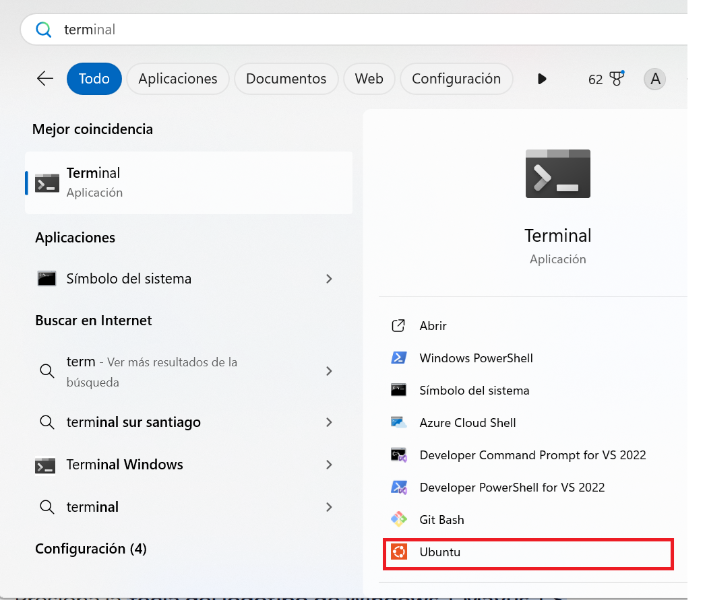
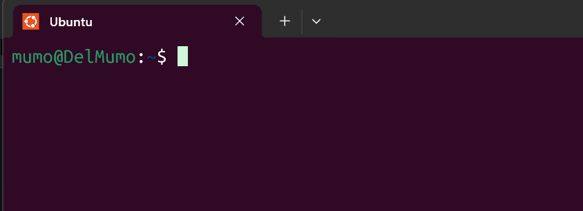
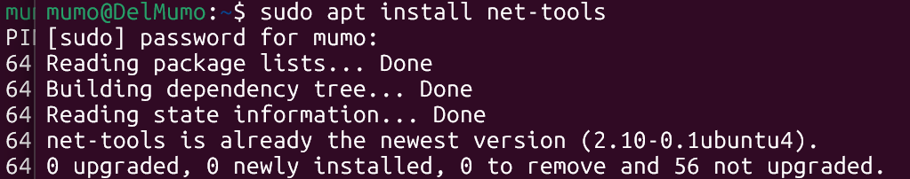
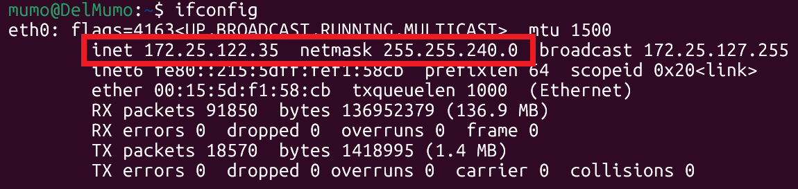

Para los que venimos del mundo Windows nos es difícil cambiar el paradigma del "doble click". En este breve tutorial les mostraré un paso a paso para conocer las direcciones IP de las interfaces de red locales.

El resultado es:

Acá se pueden presentar dos escenarios:
NO disponer del comando ifconfig. En caso debemos implementar el package net-tools con las funciones de red. Esto se realiza con la siguiente instrucción:

Se debe volver a ejecutar el comando ifconfig:
Si se dispone del comando, este se ejecutará.
